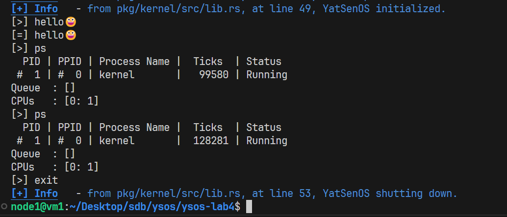
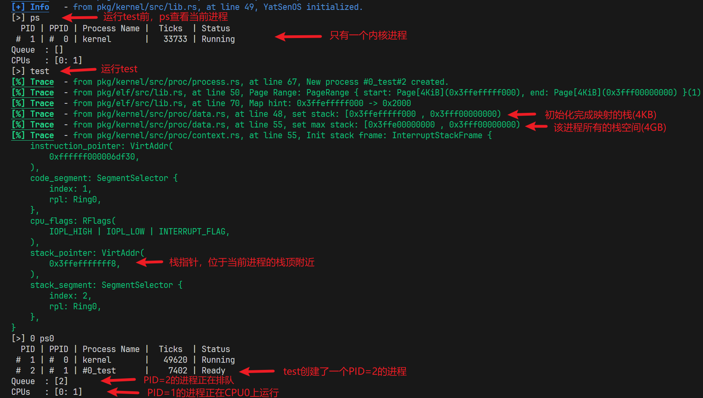
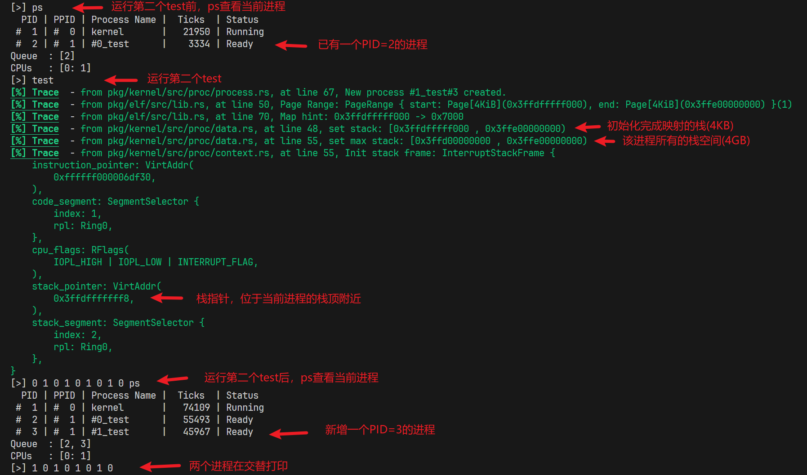
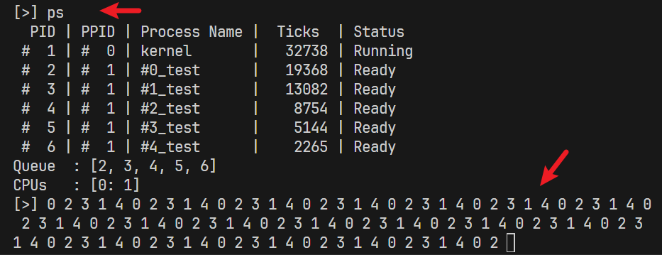
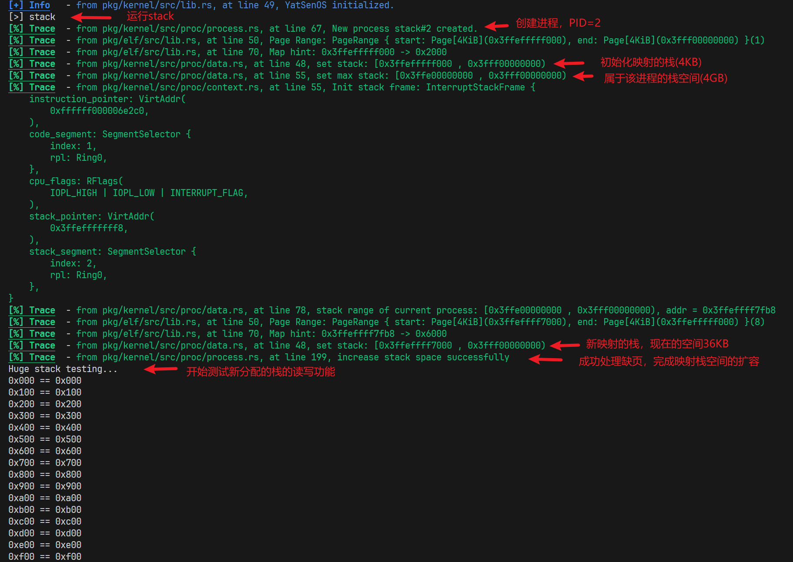
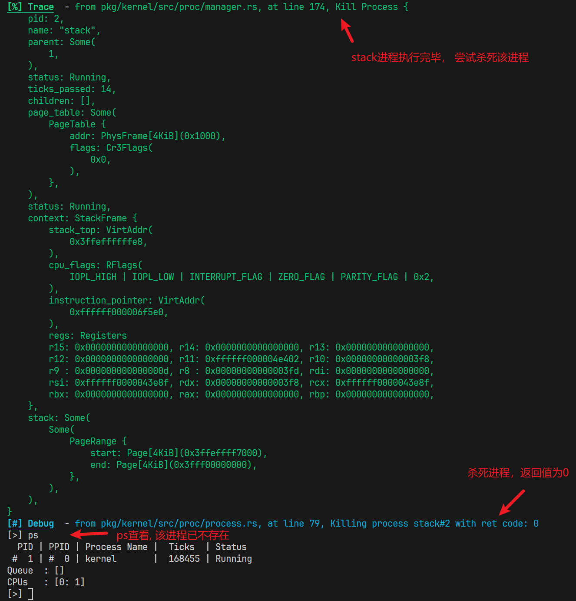
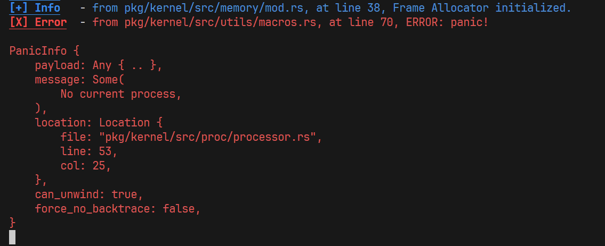
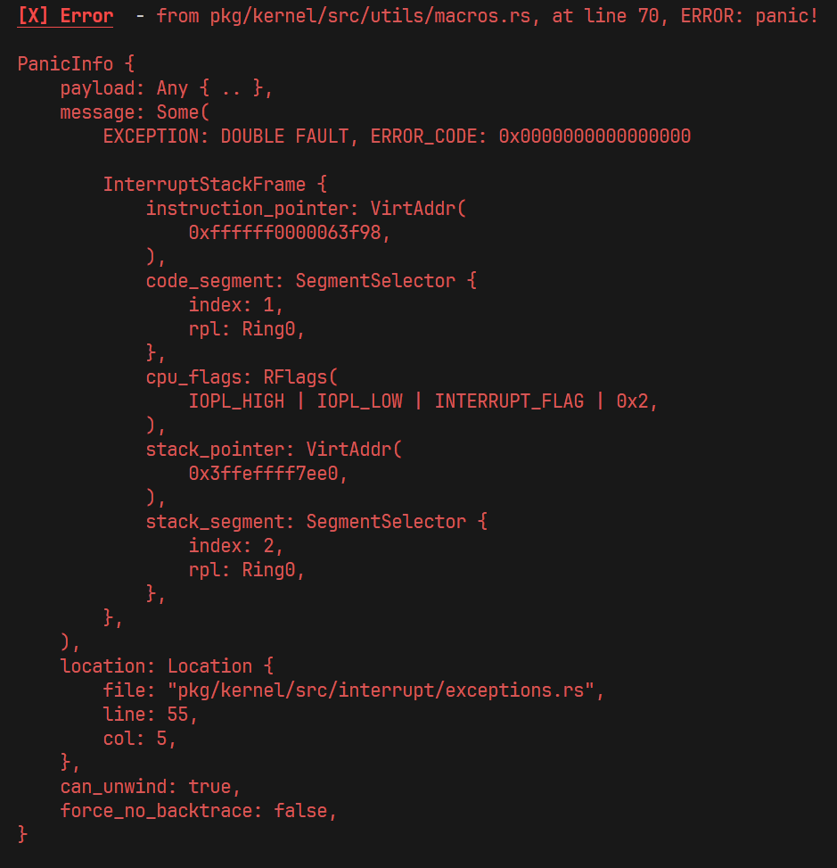
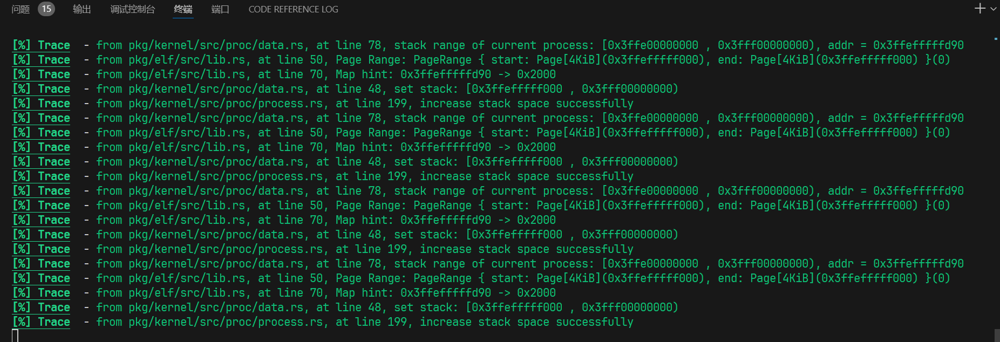

本文最后更新于 2024-05-14T10:18:57+00:00
YSOS-lab3
1. 实验要求
了解进程与线程的概念、相关结构和实现。
实现内核线程的创建、调度、切换。（栈分配、上下文切换）
了解缺页异常的处理过程，实现进程的栈增长。
2. 实验过程
阶段性成果1
在成功实现进程调度后，你应当可以观察到内核进程不断被调度，并继续执行的情况。

执行ps, 可以看到只有一个名为kernel的进程在运行, PID为1, 而且Ticks一直在增长, 说明内核进程不断被调度，并继续执行
另外可以看到进程队列始终为空, 0号CPU上运行着1号进程
阶段性成果2
进程栈的布局预期如下
1 2 3 4 5 6 7 8 9 +---------------------+ <- 0x400000000000
运行第一个test前后

新进程PID=2, 预期的栈空间为0x3FFE00000000~0x3FFF00000000, 最开始只映射栈顶的4KB, 所以最开始完成映射的栈为0x3FFEfffff000~0x3FFF00000000, 图中的输出表明它使用的栈符合预期
运行第二个test前后

新进程PID=3, 预期的栈空间为0x3FFD00000000~0x3FFE00000000, 最开始只映射栈顶的4KB, 所以最开始完成映射的栈为0x3FFDfffff000~0x3FFE00000000, 图中的输出表明它使用的栈符合预期
运行5次test
观察5个进程打印的数字如图

所有进程按照预期的顺序逐个打印自己的id, 输出为0 2 3 1 4的循环, 不存在执行时间不平均的情况
运行ps时就绪队列有5个进程在排队, 因为添加进程的时候一定是内核进程在执行, 添加的进程放在队列尾, 5个test进程以这一同样的方式逐个创建, 所以就绪队列中的PID从小到大排列是符合预期的, 不存在进程插队、执行状态不正确的情况
就绪队列中不存在重复的进程, 因为test进程不会退出, 暂时无法观察进程声明退出后的情况, 下面会用stack检验是否有进程存在声明退出后继续执行的情况
阶段性成果3


思考题
1.😋为什么在初始化进程管理器时需要将它置为正在运行的状态？能否通过将它置为就绪状态并放入就绪队列来实现？这样的实现可能会遇到什么问题？
修改pkg/kernel/src/proc/manager.rs如下
1 2 3 4 5 6 7 8 pub fn init (init: Arc<Process>) {write ().pause ();call_once (|| ProcessManager::new (init));
结果启动内核后出现panic

原因如下:
启动内核后没有设置进程管理器运行, 所以就没有进程在CPU上运行
当时钟中断到达时, CPU会执行pkg/kernel/src/proc/mod.rs的switch函数, 当执行到manager.save_current(context);时, 需要获取当前处理机正在运行的进程, 但是当前处理机上没有进程在运行, 于是触发了panic
所以, 不能通过将进程管理器置为就绪状态并放入就绪队列来实现初始化进程管理器
2.😀在 src/proc/process.rs 中，有两次实现 Deref 和一次实现 DerefMut 的代码，它们分别是为了什么？使用这种方式提供了什么便利？
1 2 3 4 5 6 7 impl core ::ops::Deref for Process {type Target = Arc<RwLock<ProcessInner>>;fn deref (&self ) -> &Self ::Target {self .inner
这段代码为Process类型实现了Deref trait, 在这个实现中：
type Target = Arc<RwLock<ProcessInner>>; 表示当对Process类型进行解引用时，将得到Arc<RwLock<ProcessInner>>类型的引用。fn deref(&self) -> &Self::Target 是Deref trait要求实现的方法，当对Process类型进行解引用时，将调用这个方法并返回Process内部的Arc<RwLock<ProcessInner>>。
因此，这段代码的作用是允许你直接通过Process类型的实例来访问其内部的ProcessInner，而不需要显式地访问inner字段。这样可以使代码更简洁，更易于理解。例如，可以直接写process.read()来读取ProcessInner，而不需要写process.inner.read()。
1 2 3 4 5 6 7 8 9 impl core ::ops::Deref for ProcessInner {type Target = ProcessData;fn deref (&self ) -> &Self ::Target {self .proc_dataas_ref ()expect ("Process data empty. The process may be killed." )
这段代码为ProcessInner类型实现了Deref trait, 在这个实现中：
type Target = ProcessData; 表示当对ProcessInner类型进行解引用时，会得到ProcessData类型的引用。deref函数返回一个ProcessData的引用。这个函数会在你对ProcessInner类型进行解引用时被调用。
这段代码的主要作用是，对于一个ProcessInner类型的变量，可以直接使用.操作符来访问ProcessData的字段，而不需要显式地解引用。如果proc_data是None，那么会触发一个panic，错误信息是"Process data empty. The process may be killed."，表示进程可能已经被杀死，所以它的数据不再存在。这是一种错误处理方式，确保在尝试访问已经被杀死的进程数据时能够立即发现问题。
1 2 3 4 5 6 7 impl core ::ops::DerefMut for ProcessInner {fn deref_mut (&mut self ) -> &mut Self ::Target {self .proc_dataas_mut ()expect ("Process data empty. The process may be killed." )
这段代码是为ProcessInner类型实现了DerefMut trait。DerefMut trait用于重载解引用运算符*，允许使用*运算符来直接访问和修改ProcessInner实例中的proc_data。如果proc_data为空，程序会panic并显示错误消息。
3.🤔中断的处理过程默认是不切换栈的，即在中断发生前的栈上继续处理中断过程，为什么在处理缺页异常和时钟中断时需要切换栈？如果不为它们切换栈会分别带来哪些问题？请假设具体的场景、或通过实际尝试进行回答。
如果不给page_fault分配独立的栈 , 启动内核运行stack后会出现double fault

默认情况下, 缺页异常的处理逻辑会运行在缺页异常发生的栈上, 所以执行缺页异常的处理逻辑必然触发新的缺页异常. 结果是出现double fault
如果不给时钟中断分配独立的栈 ，修改pkg/kernel/src/interrupt/clock.rs
1 2 3 4 5 pub unsafe fn register_idt (idt: &mut InterruptDescriptorTable) {as u8 + Irq::Timer as u8 ]set_handler_fn (clock_handler);
运行结果如下

输入test启动一个线程之后，会一直打印缺页异常的处理记录
进入调试模式观察，每两次在线程切换的过程中，都会发生一次缺页异常，发生时，代码执行到pkg/kernel/src/proc/manager.rs的switch_next函数中的set_pid(proc.pid());，猜测原因如下
为了方便解释，这里贴出switch_next函数
1 2 3 4 5 6 7 8 9 10 11 12 13 14 15 16 17 18 19 20 21 pub fn switch_next (&self , context: &mut ProcessContext) -> ProcessId {loop {if let Some (pid) = self .ready_queue.lock ().pop_front () {if let Some (proc) = self .get_proc (&pid) {if proc.read ().status () == ProgramStatus::Ready {write ().restore (context);set_pid (proc.pid ());return proc.pid ();else {return get_pid ()
第10行proc.write().restore(context);执行后，会恢复新进程的上下文和页表，，包括寄存器的值、内存段等信息。因为没有给时钟中断分配独立的栈，上面的时钟中断处理逻辑使用的栈都是旧的进程所使用的栈，也就是说，局部变量proc存储在旧的栈上，在新的栈上就无法正常访问proc了
观察调试也可以看出，执行到访问proc的方法pid()的时候恰好发生了缺页异常
3. 关键代码
实现进程管理器的初始化
设置内核相关信息, 创建内核结构体
pkg/kernel/src/proc/mod.rs
1 2 3 4 5 6 7 8 9 10 11 12 13 14 15 16 17 18 19 20 pub const KSTACK_DEF_PAGE: u64 = 512 ;pub fn init () {let mut kproc_data = ProcessData::new ();set_stack (VirtAddr::new (KSTACK_INIT_BOT), KSTACK_DEF_PAGE);"Init process data: {:#?}" , kproc_data);let kproc = Process::new (String ::from ("kernel" ),None ,new (),Some (kproc_data),init (kproc);"Process Manager Initialized." );
pkg/kernel/src/proc/manager.rs
1 2 3 4 5 6 7 8 pub fn init (init: Arc<Process>) {write ().resume ();set_pid (init.pid ());call_once (|| ProcessManager::new (init));
实现进程调度
实现时钟中断，为时钟中断分配独立的栈空间
pkg/kernel/src/memory/gdt.rs
1 2 3 4 5 6 7 8 9 10 11 12 13 14 15 16 17 18 19 pub const CLOCK_IST_INDEX: u16 = 2 ;pub const IST_SIZES: [usize ; 4 ] = [0x1000 , 0x1000 , 0x1000 , 0x1000 ];static ref TSS: TaskStateSegment = {as usize ] = {const STACK_SIZE: usize = IST_SIZES[3 ];static mut STACK: [u8 ; STACK_SIZE] = [0 ; STACK_SIZE];let stack_start = VirtAddr::from_ptr (unsafe { STACK.as_ptr () });let stack_end = stack_start + STACK_SIZE as u64 ;"Page Fault Stack : 0x{:016x}-0x{:016x}" ,as_u64 (),as_u64 ()
pkg/kernel/src/interrupt/clock.rs
1 2 3 4 5 6 7 8 9 10 11 pub unsafe fn register_idt (idt: &mut InterruptDescriptorTable) {as u8 + Irq::Timer as u8 ]set_handler_fn (clock_handler)set_stack_index (gdt::CLOCK_IST_INDEX);pub extern "C" fn clock (mut context: ProcessContext){switch (&mut context);ack ();
实现进程切换
pkg/kernel/src/proc/mod.rs
1 2 3 4 5 6 7 8 9 10 11 12 pub fn switch (context: &mut ProcessContext) {without_interrupts (|| {let manager = get_process_manager ();save_current (context);push_ready (get_pid ());switch_next (context);
pkg/kernel/src/proc/manager.rs
1 2 3 4 5 6 7 8 9 10 11 12 13 14 15 16 17 18 19 20 21 22 23 24 25 26 27 28 29 pub fn save_current (&self , context: &ProcessContext) {let proc = self .current ();write ().tick ();write ().save (context);pub fn switch_next (&self , context: &mut ProcessContext) -> ProcessId {loop {if let Some (pid) = self .ready_queue.lock ().pop_front () {if let Some (proc) = self .get_proc (&pid) {if proc.read ().status () == ProgramStatus::Ready {write ().restore (context);set_pid (proc.pid ());return proc.pid ();else {return get_pid ()
pkg/kernel/src/proc/process.rs
1 2 3 4 5 6 7 8 9 10 11 12 13 14 15 16 17 18 19 20 21 22 23 impl ProcessInner {pub (super ) fn save (&mut self , context: &ProcessContext) {if self .status != ProgramStatus::Running && self .status != ProgramStatus::Ready{return ;self .context.save (context);self .pause ();pub (super ) fn restore (&mut self , context: &mut ProcessContext) {self .context.restore (context);self .page_table.as_ref ().unwrap ().load ();self .resume ();
需要注意的是, 这里需要用以下代码判断当前进程的状态
1 2 3 if self .status != ProgramStatus::Running && self .status != ProgramStatus::Ready{return ;
否则,可能会将已经设置为Dead的进程设置为Ready
实现获取进程信息
获取环境变量
pkg/kernel/src/proc/mod.rs
1 2 3 4 5 6 pub fn env (key: &str ) -> Option <String > {without_interrupts (|| {get_process_manager ().current ().read ().env (key)
进程返回值
pkg/kernel/src/proc/manager.rs
1 2 3 4 5 6 7 8 9 10 11 12 13 14 15 16 17 18 19 impl ProcessManager {pub fn get_exit_code (&self , pid: &ProcessId) -> Option <i32 > {without_interrupts (|| { match self .get_proc (&pid){Some (proc) => {match proc.read ().exit_code (){Some (code) => {Some (code as i32 )None => {None None => None
==处理死锁问题==
==注意==: 上面实现进程返回值必须使用without_interrupts,防止出现死锁(困扰了我一下午)
在执行stack的时候, 这个函数用于等待子进程退出, 当不使用without_interrupts时, 这段代码在第6行执行proc.read()会获得proc的读锁, 之后如果出现了时钟中断而读锁没有释放, 跳转到切换进程的代码.
在切换进程的过程中会调用pkg/kernel/src/proc/manager.rs的switch_next函数, 其中有一句代码
1 proc.write ().restore (context);
需要获得proc写锁, 结果CPU会持续忙等, 等待读锁释放.
因为switch_next函数执行前已经关闭了中断, 这意味着新的时钟中断无法打断这个忙等, 死锁形成了
给get_exit_code添加without_interrupts之后, 就可以避免死锁发生
实现wait
pkg/kernel/src/utils/mod.rs
1 2 3 4 5 6 7 8 9 10 11 12 fn wait (pid: ProcessId) {loop {let pid = get_process_manager ().get_exit_code (&pid);if let None = pid {hlt ();else {break ;
实现内核线程的创建
pkg/kernel/src/utils/mod.rs
1 2 3 4 5 6 7 8 9 10 pub fn new_test_thread (id: &str ) -> ProcessId {let mut proc_data = ProcessData::new ();set_env ("id" , id);spawn_kernel_thread (format! ("#{}_test" , id),Some (proc_data),
初始化内核线程
在pkg/kernel/src/proc/manager.rs实现spawn_kernel_thread
1 2 3 4 5 6 7 8 9 10 11 12 13 14 15 16 17 18 19 20 21 22 23 24 impl ProcessManager {pub fn spawn_kernel_thread (self ,String ,Option <ProcessData>,-> ProcessId {let kproc = self .get_proc (&KERNEL_PID).unwrap ();let page_table = kproc.read ().clone_page_table ();let proc = Process::new (name, Some (Arc::downgrade (&kproc)), page_table, proc_data);let pid = proc.pid ();let stack_top = proc.alloc_init_stack ();write ().pause ();write ().set_stack_frame (entry, stack_top);self .add_proc (pid, proc);self .push_ready (pid);
实现初始化栈
pkg/kernel/src/proc/process.rs
1 2 3 4 5 6 7 8 9 10 11 12 13 14 15 16 impl Process {pub fn alloc_init_stack (&self ) -> VirtAddr {let stack_bottom : u64 = STACK_INIT_BOT - (self .pid ().0 as u64 - 1 )*0x100000000 ;let stack_top : u64 = STACK_INIT_TOP - (self .pid ().0 as u64 - 1 )*0x100000000 ;let max_stack_bottom : u64 = STACK_MAX - (self .pid ().0 as u64 )*0x100000000 ;let max_stack_size : u64 = STACK_MAX_PAGES;let stack_size : u64 = 1 ;let page_table = &mut self .inner.read ().page_table.as_ref ().unwrap ().mapper ();let frame_allocator = &mut *get_frame_alloc_for_sure ();map_range (stack_bottom as u64 , stack_size as u64 , page_table, frame_allocator).unwrap ();self .inner.write ().proc_data.as_mut ().unwrap ().set_stack (VirtAddr::new (stack_top), stack_size);self .inner.write ().proc_data.as_mut ().unwrap ().set_max_stack (VirtAddr::new (max_stack_bottom), max_stack_size);new (stack_top as u64 )
==修改x86_64的版本==
==注意:== 需要检查boot, elf, kernel的Cargo.toml中x86_64的版本是否都是0.15, 否则会出现map_range报错的问题(困扰了我一个下午)
将栈顶地址、待执行函数的入口地址放入初始化的进程栈帧:
pkg/kernel/src/proc/process.rs
1 2 3 4 5 impl ProcessInner {pub fn set_stack_frame (&mut self , entry: VirtAddr, stack_top: VirtAddr){self .context.init_stack_frame (entry, stack_top);
实现humanized_size
在pkg/kernel/src/lib.rs添加该函数, 用于进行字节数转换, 实现格式化输出
1 2 3 4 5 6 7 8 9 10 11 12 13 14 15 pub fn humanized_size (size: u64 ) -> (f64 , &'static str ) {let mut f : f64 = size as f64 ;if size < 1024 {"B" )else if size < 1024 * 1024 {1024.0 ;"KiB" )else if size < 1024 * 1024 * 1024 {1024.0 * 1024.0 ;"MiB" )else {1024.0 * 1024.0 * 1024.0 ;"GiB" )
实现ProcessId::new
修改pkg/kernel/src/proc/pid.rs, 借助AtomicU16实现PID从1开始原子递增
1 2 3 4 5 6 7 8 9 10 11 12 pub struct ProcessId (pub u16 );impl ProcessId {pub fn new () -> Self {static COUNTER: AtomicU16 = AtomicU16::new (1 );let id = COUNTER.fetch_add (1 , Ordering::SeqCst);ProcessId (id)
实现处理缺页异常
注册处理缺页异常的中断处理函数
pkg/kernel/src/interrupt/exceptions.rs
1 2 3 4 5 6 7 8 9 10 11 12 13 14 15 16 17 pub extern "x86-interrupt" fn page_fault_handler (let addr = Cr2::read ().expect ("Cr2 VirtAddr Not Valid" );if !crate::proc::handle_page_fault (addr, err_code) {"EXCEPTION: PAGE FAULT, ERROR_CODE: {:?}\n\nTrying to access: {:#x}\n{:#?}" ,"Page fault is caused by {:#?}" , get_process_manager ().current ());panic! ("Cannot handle page fault!" );
在pkg/kernel/src/proc/manager.rs实现handle_page_fault
1 2 3 4 5 6 7 8 9 10 11 12 13 14 15 16 17 18 impl ProcessManager {pub fn handle_page_fault (&self , addr: VirtAddr, err_code: PageFaultErrorCode) -> bool {if err_code.contains (PageFaultErrorCode::PROTECTION_VIOLATION){"PROTECTION_VIOLATION caused page fault" );false else {let proc = self .current ();if proc.read ().is_on_max_stack (addr){write ().inc_stack_space (addr);true else {"the addr {:#?} is not in the stack of current process" , addr);false
实现kill进程的逻辑和映射新的栈空间的逻辑
pkg/kernel/src/proc/process.rs
1 2 3 4 5 6 7 8 9 10 11 12 13 14 15 16 17 18 19 20 21 22 23 24 25 26 27 28 29 30 31 32 33 impl ProcessInner {pub fn kill (&mut self , ret: isize ) {self .exit_code = Some (ret);self .status = ProgramStatus::Dead;self .proc_data.take ();self .page_table.take ();pub fn inc_stack_space (&mut self , addr: VirtAddr){let old_page_range = self .proc_data.as_ref ()expect ("Failed to get proc_data" )expect ("Failed to get page range" );let old_start_page = old_page_range.start;let old_end_page = old_page_range.end;let cur_start_page = Page::<Size4KiB>::containing_address (addr);let stack_size = old_start_page - cur_start_page;let page_table = &mut self .page_table.as_ref ().unwrap ().mapper ();let frame_allocator = &mut *get_frame_alloc_for_sure ();map_range (addr.as_u64 () as u64 , stack_size as u64 , page_table, frame_allocator).unwrap ();self .page_table.as_ref ().unwrap ().load ();self .proc_data.as_mut ().unwrap ().set_stack (addr, old_end_page - cur_start_page);"increase stack space successfully" );
修改ProcessData数据结构
data.rs
1 2 3 4 5 6 7 8 9 10 11 12 13 14 15 16 17 18 19 20 21 22 23 24 25 26 27 28 29 30 31 32 33 34 35 36 37 38 39 40 41 42 43 44 45 46 47 48 49 50 51 52 53 54 55 56 57 58 59 60 61 62 63 64 65 66 67 68 69 70 71 72 73 74 75 76 77 #[derive(Debug, Clone)] pub struct ProcessData {pub (super ) env: Arc<RwLock<BTreeMap<String , String >>>,pub (super ) stack_segment: Option <PageRange>,pub (super ) max_stack_segment: Option <PageRange>impl Default for ProcessData {fn default () -> Self {Self {new (RwLock::new (BTreeMap::new ())),None ,None ,impl ProcessData {pub fn new () -> Self {Self ::default ()pub fn env (&self , key: &str ) -> Option <String > {self .env.read ().get (key).cloned ()pub fn set_env (&mut self , key: &str , val: &str ) {self .env.write ().insert (key.into (), val.into ());pub fn set_stack (&mut self , start: VirtAddr, size: u64 ) {let start = Page::containing_address (start);self .stack_segment = Some (Page::range (start, start + size));let start_u64 = Page::range (start, start + size).start.start_address ().as_u64 ();let end_u64 = Page::range (start, start + size).end.start_address ().as_u64 ();"set stack: [{:#x} , {:#x})" , start_u64, end_u64);pub fn set_max_stack (&mut self , start: VirtAddr, size: u64 ) {let start = Page::containing_address (start);self .max_stack_segment = Some (Page::range (start, start + size));let start_u64 = Page::range (start, start + size).start.start_address ().as_u64 ();let end_u64 = Page::range (start, start + size).end.start_address ().as_u64 ();"set max stack: [{:#x} , {:#x})" , start_u64, end_u64);pub fn is_on_stack (&self , addr: VirtAddr) -> bool {match self .stack_segment{Some (range) => {let addr = addr.as_u64 ();let start = range.start.start_address ().as_u64 ();let end = range.end.start_address ().as_u64 ();"stack range of current process: [{:#x} , {:#x}), addr = {:#x}" , start, end, addr);None => false pub fn is_on_max_stack (&self , addr: VirtAddr) -> bool {match self .max_stack_segment{Some (range) => {let addr = addr.as_u64 ();let start = range.start.start_address ().as_u64 ();let end = range.end.start_address ().as_u64 ();"stack range of current process: [{:#x} , {:#x}), addr = {:#x}" , start, end, addr);None => false
该部分修改较多, 修改思路如下:
在结构体ProcessData中添加max_stack_segment.
stack_segment表示已经完成映射的栈区间, 访问该区间不会发生缺页异常max_stack_segment表示属于该进程的栈空间, 但没有全部完成映射, 访问时可能会发生缺页异常
set_stack和set_max_stack分别实现对stack_segment和max_stack_segment的设置is_on_stack和is_on_max_stack分别实现判断一个地址是否在stack_segment和max_stack_segment上
4. 实验结果
见实验过程的三个阶段性成果, [点击跳转](# 阶段性成果1)
5. 总结
熟悉了CPU调度进程的方式，并且了解如何处理缺页异常